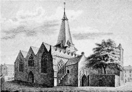

<!doctype html>
<html lang="en">
<head>
	<meta charset="utf-8">
	<meta name="viewport" content="width=device-width, initial-scale=1">
	<title>Part III | Hardiman&#x27;s History of Galway</title>
	<link rel="stylesheet" href="../assets/site.css">
	<script src="../assets/site.js" defer></script>
</head>
<body class="bs-shell">
	<a class="skip-link" href="#main-content">Skip to main content</a>
	<button class="nav-backdrop" type="button" data-nav-backdrop aria-label="Close navigation"></button>
	<div class="site-layout">
		<aside class="bs-sidebar" id="primary-nav" aria-label="Primary navigation"><div class="bs-sidebar-content"><a class="bs-sidebar-brand" href="../index.html" title="Hardiman home"><span class="brand-mark" aria-hidden="true">H</span><span class="brand-text"><span class="brand-title">Hardiman</span><span class="brand-subtitle">History of Galway</span></span></a><button class="mobile-nav-close" type="button" data-mobile-nav-close aria-label="Close navigation">x</button><div class="bs-nav-section-title">Start</div><ul class="nav"><li><a class="nav-link" href="../index.html" title="James Hardiman&#x27;s History of Galway"><span class="bs-sidebar-label">Home</span></a></li></ul><div class="bs-nav-section-title">Front matter</div><ul class="nav"><li><a class="nav-link" href="letter.html" title="Letter to James Daly, Esq."><span class="bs-sidebar-label">Letter</span></a></li><li><a class="nav-link" href="preface.html" title="Preface"><span class="bs-sidebar-label">Preface</span></a></li></ul><div class="bs-nav-section-title">Part I</div><ul class="nav"><li><a class="nav-link" href="c1.html" title="Chapter 1"><span class="bs-sidebar-label">Chapter 1</span></a></li><li><a class="nav-link" href="c2.html" title="Chapter 2"><span class="bs-sidebar-label">Chapter 2</span></a></li><li><a class="nav-link" href="c3.html" title="Chapter 3"><span class="bs-sidebar-label">Chapter 3</span></a></li><li><a class="nav-link" href="c4.html" title="Chapter 4"><span class="bs-sidebar-label">Chapter 4</span></a></li><li><a class="nav-link" href="c5.html" title="Chapter 5"><span class="bs-sidebar-label">Chapter 5</span></a></li><li><a class="nav-link" href="c6.html" title="Chapter 6"><span class="bs-sidebar-label">Chapter 6</span></a></li><li><a class="nav-link" href="c7.html" title="Chapter 7"><span class="bs-sidebar-label">Chapter 7</span></a></li></ul><div class="bs-nav-section-title">Notes</div><ul class="nav"><li><a class="nav-link" href="c1fn.html" title="Chapter 1 Footnotes"><span class="bs-sidebar-label">Chapter 1 notes</span></a></li><li><a class="nav-link" href="c2fn.html" title="Chapter 2 Footnotes"><span class="bs-sidebar-label">Chapter 2 notes</span></a></li><li><a class="nav-link" href="c3fn.html" title="Chapter 3 Footnotes"><span class="bs-sidebar-label">Chapter 3 notes</span></a></li></ul><div class="bs-nav-section-title">Later parts</div><ul class="nav"><li><a class="nav-link active" href="part3.html" title="Part III"><span class="bs-sidebar-label">Part III</span></a></li><li><a class="nav-link" href="part4.html" title="Part IV"><span class="bs-sidebar-label">Part IV</span></a></li><li><a class="nav-link" href="engravings.html" title="Postscript Concerning the Engravings"><span class="bs-sidebar-label">Engravings</span></a></li><li><a class="nav-link" href="../map/index.html" title="Map Scans"><span class="bs-sidebar-label">Map scans</span></a></li></ul><div class="bs-sidebar-actions"><button type="button" id="strixieSidebarToggle" class="bs-sidebar-toggle" aria-label="Collapse navigation" aria-pressed="false" title="Collapse navigation"><</button></div></div></aside>
		<div class="site-content">
			<header class="bs-topbar"><div class="topbar-inner"><button class="mobile-nav-toggle" type="button" data-mobile-nav-open aria-label="Open navigation">Menu</button><div><h1 class="topbar-title">Part III</h1><p class="bs-topbar-subtitle">Ecclesiastical history</p></div><div class="topbar-actions"><a class="btn btn-sm" href="../index.html">Contents</a><a class="btn btn-sm" href="https://github.com/jdesbonnet/history-of-galway-hardiman">GitHub</a></div></div></header>
			<main id="main-content" class="container-fluid"><section class="page-hero card"><p class="eyebrow">Ecclesiastical history</p><h1>Part III</h1><p class="page-summary">The ecclesiastical history of Galway to Hardiman&#x27;s present time.</p><div class="page-actions"><a class="btn btn-primary" href="../index.html">Contents</a></div></section><nav class="page-nav" aria-label="Previous and next pages"><a href="c7.html"><span>Previous</span>Chapter 7</a><a href="part4.html"><span>Next</span>Part IV</a></nav><section class="notice" aria-label="OCR notice"><span class="notice-mark" aria-hidden="true">!</span><p><strong>OCR text preserved.</strong> This transcription has not been proofed; spelling and recognition errors remain as found in the source files.</p></section><section class="reading-card card"><article class="book-article" data-source-preserved="true"><div class="text-center">

<p>
THE<br/>
HISTORY<br/>
OF</p><p>
GALWAY</p><p>
</p><hr width="30%"/>
PART III.<p>
THE ECCLESIASTICAL HISTORY OF THE TOWN TO THE PRESENT TIME.

</p><p></p><p></p><p></p></div>
<hr width="30%"/>
<div class="text-center">Collegiate Chureh of St. Nicholas.[[1]]</div>
<p>


THIS ANCIENT and venerable edifice, which, for extent and architectural
beauty, is inferior to very few ecclesiastical foundations in the kingdom,
stands a lasting testimonial of the piety, wealth and public spirit of its
founders, the former inhabitants of Galway. It is situate on a gentle
eminence, nearly on the north-west extremity of the town, and contigious to the river, on the site
of a small chapel, which was the original and only place of worship
belonging to the settlers, until, their wealth and affluence having
increased with their industry and trade, they resolved to adorn the town by
erecting a more superb structure for the service of the Deity. The present
church was accordingly founded in 1320, and, on its completion, was solemnly
dedicated to St. Nicholas of Myra, the tutelar saint of mariners, who was
chosen as the patron of the town in consequence of its early and extensive
commerce. The original foundation was gradually enlarged by the piety of
individual benefactors, until in course of time, it became one of the finest
ecclesiastical structures in Ireland.

</p><p>

The town of Galway originally belonged to the diocese of Enachdune, an
ancient bishoprick, united in 1324 to the archiepiscopal see of Tuam.2 Since
this union the church of St. Nicholas was governed by vicars, instituted by
that see, who were commonly of Irish extraction, and, of course, entirely
different from their English parishioners, as well in their principles as in
their manners and common habits of life. In this state, discontents and
jealousies between the clergy and their flock were inevitable. The latter
constantly complained that their Irish pastors were generally prejudiced
against them, as being of English origin, and that they invariably
countenanced and abetted their own friends and kindred of the Irish race, by
whom the town was on all sides surrounded, and with whom the town s-people
were in a state of continual hostility. The affairs of religion being thus
circumstanced within the town, Donatus O Murray, who was elected archbishop
of Tuam in 1458, at length interfered, and, in consideration, as is said, of
and ample equivalent bestowed by the inhabitants, and annexed to the see, he
of his own authority erected the church of St. Nicholas into a collegiate of
exempt jurisdiction, by letters under his seal, dated the 28th September,
1484,3 and to it united the parish church of St. James of Balenclaer (now
Clare Galway). This act having obtained the sanction of pope Innocent VIII.
by bull, dated the sixth of the ides of February following (as particularly
detailed in a former part of this volume) the inhabitants, or rather the
mayor and equals, (pares) of the town immediately proceeded to the election
of a warden and vicars, according to the powers with which they were so
amply invested by these ecclesiastical dispensations.

</p><p>

The inhabitants of Galway, having thus succeeded, to the fullest extent of
their wishes, in getting rid of an exterior, and establishing a domestic,
nomination of the clergy, now began to direct their thoughts towards the
endowment of the college and the improvement of the church. Dominick Lynch
FitzJohn, one of the most opulent merchants of the town, who was mayor in
1486, and chiefly instrumental in promoting the original institution, was
one of its principal benefactors. He made several additions to the church,
and built a part of the college house, or residence for the wardens and
vicars, to whom in his will he also bequethed several legacies.4 The union
of exterior additional parishes, to extend the jurisdiction and increase the
revenues of the college, was next attended to. On the 7th of August, 1486,
William Joyes, archbishop of Tuam, and a native of the town,5 confirmed by
his deed all the former grants and privileges of the collegiate church,
warden and vicars;6 and he soon after <span id="p244"> united to the church
the parishes of Furanmore, Moygcullyne and Skryne.7 Notwithstanding these
unions, the wardens and vicars were soon obliged to petition the pope,
complaining that certain persons had questioned the union of Skryne and
Moygcullyne, although they had obtained possession of the vicarages, the
yearly fruits, rents and profits whereof did not annually exceed fourteen
marks, and they humbly prayed that his holiness would be, therefore, pleased
to confirm the union; which by bull dated the 4th of the Nones of June,
1492, the pope accordingly approved of and confirmed. About the same time,
Richard de Burgo, clerk of the diocese of Annaghdown, having obtained
letters from the holy see respecting the rectory and vicarage of Furanmore
and the vicarage of Meary, for the creation of a new canonry, and the
erection of one of them into a prebend, the archbishop, by his letters,
dated from Galway, 12th of November, 1492, expressly prohibited the judges,
named in such apostolical letters, from proceeding in any manner in such
erection. By these and similar means the possessions of the collegiate
church were gradually extended and protected, until the wardens, at length,
found themselves at the head of an extent of territory and population not
inferior to some dioceses in the kingdom.

</span></p><p>

While ihe possessions of the college were thus rapidly increasing, the
inhabitants of the town were not inattentive to their favorite building, the
church. James Lynch Fitz-Stephen (who was mayor in 1493, and who had
condemned alld executed his own son for a rash and cruel murder, see p. 73),
made many valuable additions to the church, and, in particular, presented
the beautifully stained glass with which the eastern windows were adorned.
John Lynch Fitz-Edmund, who was mayor the year following, <span id="p245">
wasting its revenues: and it is said "that he 8th of June following, <span id="p245"> contributed a large sum towards finishing the college-house.
Peter Lynch, burgess, erected in the church the chapel and altar of St.
Katherine the Virgin; and by his will, dated 9th February, 1494, devised
"his principal stone tenement in Galway, and ten acres of arable land in
Athenry for ever, for the perpetual sustenance of one good and proper
priest, who should daily celebrate mass therein for the souls of himself,
Ellen Blake, his wife, their allcestors, friends, and all the faithful
departed."-Several similar instances of individual benevolence and devotion
occur about this period, by which the possessions of the church were
considerably augmented 8

</span></span></p><p>

The wardens and vicars were not, however, permitted to enjoy their newly
acquired possessions in peace, but were continually harrassed by the
surrounding diocesan clergy, who invariably contested the right of union of
the several parishes, and gave the new incumbents every possible opposition.
At length, in 1496, they were obliged to petition pope Alexander Vl.,
stating that, although the several parishes were canonically united to the
church of St. Nicholas, yet that Maurice O'Flaherty, clerke, laid claim to
tlle vicarage of the parish church of Moycullen; that Roderick O'Kennewayn
and Owen O'Flaherty claimed the vicarages of Kylcommyn and Kilrowan; and
that Richard de Burgo and others claimed the rectories and vicarages of
Furanmore and Meary; and they humbly prayed relief from his holiness. A bull
accordingly issued to the bishop of Clonfert and David de Burgo, canon of
the cathedral church of Clonfert, giving them full power to hear and
determine between the parties. These commissioners met on the 17th of
December, 1497, in the parish church of Ballynpatrick, in the diocese of
Clonfert, and, after a solemn investigation, pronounced judgment of
intrusion against the persons complained of, and others. These decisions,
however, decisive as they were in favour of the warden and vicars did not
entirely suppress their opponents, and they were again obliged to have
recourse to the holy see. Another bull accordingly issued, dated the 7th of
the Ides of January, 1501, directed to the archbishop of Tuam and others,
empowerinz them to admonish "all those sons of iniquity" who had in any
manner
<span id="p146">
invaded the rights of the collegiate church, or usurped any of its possessions; and if they should not restore what they had taken, and desist for the future, then to pronounce against them the sentence of excommunication. This strong remedy seems to have had the dseired effect, for it does'not appear that any opposition was given to the college for several years after, with the single exception of its determined opponent, Richard de Burgo, the canon of Annaghdowns who, in 1502, petitioned the pope, claiming the right to the rectory of Ballinclaer, though it had been united to the collegiate church at the time of its original institution. A commission accordingly issued, directed to Florence O'Cannovan, to inquire concerning this alleged claim, who, after investigating the matter, decided against it. For some years after this decision the college enjoyed a respite from external opposition, which John Bermingham, warden in 1514, and Henry Brangan, warden in 1557,9 were successful in preventing, until the archbishop of Tuam united the vicarages of the parish churches of Kinlaghan and Srower to the wardenship, when two of the diocesan clergy, Meiler and Thomas Mac Shonyn, having laid claim to these livings, obtained letters from Rome allowing their claim, under which they received all the fruits, rents and profits of the vicarages. The warden and vicars, on their part, charged them with having obtained these letters surreptitiously, without stating the union which had been made; and having brought the question before the archbishop, he made his decree on 9th January, 1526, annulling the adverse claim, and confirming the previous union. This dispute was succeeded by anotheroconcerning the rectory and vicarage of Roscam, which had been shortly before united by the archbishop, but was claimed by Edmund de Burgo, archdeacon of Enachdune. On the petition of John O'Dermode, then warden, to cardinal Wolsey, a commission issued to the dean of Kilfenora to investigate this claim and determine between the parties, who, by his decree, dated the 5th of August, 1529, confirmed the title of the college; and thus terminated all further litigation concerning its exterior possessions. 10
</span></p><p>

During the continuance of these disputes, the improvement of the church was
carried on without intermission. John French, who was mayor in 1538, made
some very considerable additions to it, and, amongst others, erected the
spacious <span id="p147"> wing extending from the north pinnacle to the
Chapel of the Blessed Sacrament. Soon after this, the first symptom of
reformation appeared in the town. Lord deputy Grey having arrived, he seized
and confiscated the ornaments of the church; and Sir William Brabazon,
vice-treasurer of Ireland, in his "Account of Jewels, Ornaments, Crosses and
Images Confiscated," returns "forty-five shillings, being the price of such
articles seized at Galway, received from Leonard, late deputy of the king."
This inadequate return would induce a supposition either that the
confiscation in Galway was trifling, or that the embezzlement, with which
the ill-fated deputy was afterwards charged, was considerable. However, that
may be, no farther inconvenience was sustained by the town on account of
religion during the remainder of the reign of Henry VIII. In 1542,
Christopher Bodkin, archbishop of Tuam,l 1 at the request of the mayor and
burgesses, in a provincial synod then held in the town, confirmed to the
college all the benefices which it had justly and quietly possessed, and all
other benefices which it theretofore held and which were afterwards occupied
by any others, with all their rights and appurtenances: and here the force
of native partiality in this archbishop, and his predecessor, William Joyes
(who were natives of the town), is remarkable, they being the only prelates
who had confirmed the privileges of the collegiate church from the time of
its original institution. 12

</span></p><p>

The alarming changes daily making in the affairs of religion, and the
indiscriminate seizure of all ecclesiastical property during the latter
years of Henry VlII. had, for some time, rendered the clergy and people of
Galway apprehensive for the safety of their collegiate church and property,
and more particularly when they saw the three monastic foundations of the
town dissolved, and their possessions seized into the the king's hands.
Afterlong deliberation, therefore. they determined to yield to the pressure
of the times, <span id="p248"> and secure the safety of their religious
establishment, by withdrawing their spiritual allegiance from the pope, and
transferring it to the king. A petition to his majesty, expressive of this
determination, was consequently prepared, but his death intervened before it
could be presented. The appearance of affairs on tlle accession of Edward
Vl. not having lessened their apprehensions they persevered in their former
resolution, and accordingly a memorial to the same effect (and particularly
calculated to succeed in its object, by ilattering the king's supremacy, and
representing the livings as poor and deserted),l3 from the mayor, bailiffs,
co-burgesses and commonalty, was presented to the lord deputy St. Leger by
Ricllard Blake Fitz-John, the agent employed on tlle occasion. 1 4 The
matter was referred by the deputy to the king and council; and, after two
years' delay, the royal grant was obtained under the privy seal, and by
authority of parliament, dated at Westminster the 29th April, 1551, whereby
the king, as supreme head in all affairs of religion, changed the church of
St. Nicholas into a collegiate, to be for ever after called "The Royal
College of Galway"; and ordained Patrick Blake, merchant, one of the priests
tllere, warden, and Patrick Kerewan, Thomas Frenche, Darby O'Hoysshyne, John
Talman, Derby O'Rowane, John Dermoyte, John O'Brangan and Edward O'Flartie,
vicars choral: the college to consist of a warden and eight vicars, who were
to be a body corporate, and having perpetual succession, possess a common
seal, and enact by-laws for its good government. The mayor, bailiffs,

-burgesses, and commonalty, and their successors for ever, were empowered to
elect a warden yearly, and to remove, deprive and depose him and the vicars,
and others in their places to constitute; and to chastise, correct and <span id="p149"> punish them, as occasion should require. The rectories,
vicarages, etc., mentioned in the memorial were for ever united to the
college; and the cemeteries of the three dissolved monasteries were also
granted for the purposes mentioned in the memorial.ls-Such were the
principal alterations made in the constitution of the collegiate church by
Edward Vl.; and under his charter, with some short interruptions, it has
been governed to the present day.

</span></span></p><p>

An era having been thus formed in the church government of Galway,
henceforth it will be necessary to consider the affairs of religion in a
two-fold point of view, first as they relate to the Protestant? and next to
the Catholic interest within the town. Although, by the grant just recited,
the church of St. Nicholas was changed into a Protestant institution, yet
the warden and vicars, for many years after, continued of the old religion,
owing to the immediately succeeding Catholic reign of queen Mary, and the
unsettled state of ecclesiastical affairs in Ireland during the first years
of her successor. Soon after the accession of the former princess, the
attention of her Irish rulers was directed towards the state of religion in
Galway. Sir Patrick Blake, the warden nominated in the charter of Edward,
was summoned to meet the queen's commissioners; but having neglected to
attend, a peremptory order was issued to the mayor to apprehend and send him
in safe custody within twenty days, with a denunciation of severe punishment
in case of neglect. This meaSure had the desired effect: the warden
attended; but, having satisfied the commissioners, he was dismissed by them,
without suffering any further inconvenience. 16

</p><p>

About this time many considerable additions were made to the church by
Nicholas Lynch Fitz-Stephen, grandson of Dominick Lynch, whose munificence
has already been recorded. Nicholas was mayor in 1554; and, having repaired
the works formerly erected by his grandfather, he afterwards built the
adjoining tower and south aisle, then called "Our Ladie's Chapel," but now
better known by the name of Lynch's Aisle.-These were the last improve <span id="p250"> ments of any consequence made by tlle Catholics in the church
during the remainder of this century. 17
</span></p><p>

Upon the accession of queen Elizabeth, and the consequent alteration in
religion, the Catholic clergy of the town foresaw that a change was not far
distant, and they accordingly alienated and granted, in perpetuity, to their
friends and kindred, the greatest part of the possessions of the college,18
insomuch that, when it was afterwards seized into the queen's hands, and
transferred to the reformed clergy, they were found considerably reduced.
The same apprehensions of change also prevented the wardens and vicars from
paying the necessary attention to the exterior parishes, in consequence of
which they were gradually usurped by the diocesan rectors. 1 9 The church
being at length surrendered to the established clergy, whatever remained
unalienated of its former possessions were also delivered up; but, being
found totally inadequate to their support, it became necessary for
government to interfere, and uphold this infant foundation of the newly
established faith by augmenting its means: accordingly, by letters patent,
dated 20th September, 1578, the queen, in consideration that "the warden and
vicars? and their successors, should continue together, and entertain a
godly and learned preacher amongst them, from time to time, at tlleir own
charges," granted unto them the late dissolved monastery or priory of
Anllaghdown72� ill tllc county of Galway, with all its temporal and
spiritual possessions. They soon after obtained a similar grant of the
monastery <span id="p251"> of Ballintubber, in. the county of-Mayo., In the
same year several useful alterations. were.mnade, in the
church: the western windows were enlarged; and over one of them the
date still remains engraven in  stone. About the same time

several other improvements  were undertaken.21 In the mayoralty of 
James Lynch Fitz-Ambrose, in 159O, a belfry was erected, 
and a chime of new bells provided under the superintendance of the maayor, 
but at the expense of the inhabitants and corporation.

</span></p><p>

Henceforth,  in order to- avoid confusion,, the-affairs of the collegiate church shall be~ distinctly noticed., under two aseparate; heads;: first,.. those relating

with a-}3soiety -of the tithes and other spirituaT use only God's divine service daylie, according profits in Ballinacourty, Ballinclohy, Owrane to. her majestie s injunctions, and do there and CDreganna, belonging to the said rectory, minister sacraments and sacramentalls accor(the other moiety thereef H belonging to the \ dinglie.

bisho&gt;Pf Tuam and the vicar that serveth the I - 4 "That John Linche, now lord bishop of

cure);therectorleoflClleumin,inO'Flahertle's Elphinen and in those days wardian of the country; with all the tithcs (those due to the colladge of Galway, has of the colladge plate vicarexcepted); and all the rectories o~ Carigllrl two cups or pics of silver in lending (viz. and Lisduch, in the same, being part of the Margaret. Athies pic parcell gilted, and a spiriteal possesslons- of the sald late monas- bastian PiC all gilted,) which he did put tery, for fifty years�at.the rent of 61. 11s. 4d. in.pawn unto James Darsye, and wrongfullie yearly: otwithstanding these grants, the doth.detayne from the. said colladge.

affairs of the collegiate clergy continued on tHe .

deel ne . In 1585, Sir Henry Burke, the ,war- 5. "That It Is expedient. that. the colladge den, was arrested by order of the archbishop of -~ fgo ,,,,,e first offer off all such fther tiethes
oen, was arrestea Dy oracr oi dlUIIUlbllU,U U1 _ ,

Tuam, and detained in prison, "for fifteen as they will sell, to the freemen of the towne marks, due for small benciices." lle petitioned before any other; our meaninge is, because Sir Nicholas Malbie, chief commissioner of for a greate parte of the yeare, leave ther Connaught,stating,thatthebeneficeswerewaste, habitation and keape them from the towne, and in a desert country, that the college was neithcr aunsweringe watch or warde, as should reduced to great poverty, and pl'aying for re: appertein, moche lesse to aplie ther handydress- otherwise "that they should be obliged craft to ther owne and the comon wealthes no to sell such livings as they then had for their smale damadge. 

sustenance, and also for the support of many
sustenance,- and also for the support of many 6. "That in respect of ther. good service, the poor children whom they kept in the college." clerke and sexten sahll h?ve ther ordinari

allowed them upon the colladge boorde; and
-Orig. MS. S

	21 15X5, February 25th, in the inquiry alluded to, page 91, the following particulars occur concerning the church:-

	1. "That the wardian and vicars of the quen's colladge in Gallway, tyme out of mynd, are seized in right af their said colladge of fiveeighte partes of all the. personall and prediall tiethes cominge and growinge within the town the liberties and franchises of the same.
	2. "That all who have been suspected to absteyne them from church to here God's dyvyrlff service, accordinge to her majestie's proceedings, contrary to the proclamation that his meralty, for the common utilitye and Mr: Malor did settforth, that all those who profitt."-It appeared that the corporation had have bene in towne, negleetingetheir,duetoGod originally disputed these expenses, and that the and the prince, be deeplie fyned bfy Mr Maior2 matter was then submitted to arbitrators, who and if arty of them doe'make!i~nYi H kynde ot on20thS

contempt; that all such be b'othfynsshed and of said workcs were beneficial and necessarie punished*-actordlng to their deserts. The names for the utilitye of the commons and corporaof the defaulters, the clerke and sexterr; who tion, and that said James Linche should have of have chardge theteof, will delyver uppe; thern 63/."-This sum not having been paid and whether any in this corporation do use any the chancellor now ordered the corporation to
when the full number of nyne mynisters be not in the colladge, that then the cierke shall have so moche money as cometh to the ninth partion, in consideration whereof he shall not onelie. serve and reed the chapters, but also teache the priests?- boyes to singe and play, over and besids his owne chardge for teaching other youths."-Id.
	22 In 1620 Ambrose Lynch? son and administrator of this mayor, complained to the chancellor against the corporation, "concerninge charges of works and rnaking of bells, and other things, by the said James, in the time of


other serviSe Rohibited by God and her majestie's laws we are thereof ignorant.

3 "That the'iwardiann vicars and priests do
pay it forthwith, with 40L interest for retaining it thi:*y years.-Orig Decree.
252
HlsToRy OF GALWAY

to the Protestant, and next to the Catholic wardens and vicars of the town, of both of whom an uninterrupted succession has been ever since continued. Those of the established church had, since the Reformation, been elected under the charter of Edward VI.; and nothing remarkable appears to have occurred concerning them until after the troubles of 1641. A survey of the possessions of the college (of which an abstract is subjoined23) was, shortly before that disastrous period, taken by lord Strafford; and in 1639 his lordship recommended John Hardinge, vice-provost of Tnnity College, Dublin, to the mayor, to be elected warden. Upon this recommendation, the corporation, considering "the dilapidations and ruins of the colledge, and of the means and livinge thereunto belonging, as allso the ment and integrity of the said John Hardinge, and his willingness to do good in that place, and to restore the colledge to a decent state and order for the service of God, to the credit and ornament of this towne, and to the honour and memorie of the founders and benefactors thereof, for the better inhabeling the said John in his so pious intentions, they accordingly agreed, pursuant to the powers contained in the grant of Edward VI. to elect him annually during his life, 'he demeaning himself well,' provided their so doing should not tend to the avoydence of the said grant, or the loss of any privilege contained therein."-Leaving doctor Hardinge, therefore, in possession of the wardenship, the reader will now return back a little to ascertain the state of the Catholic clergy in the town after the reformation.

As the reformed warden and vicars were chosen under the grant of

23 POSSESSIONS OF THE COLLEGE OF ST.
NICHOLAS, I 637.

Town and Liberties of Galway.

	"In the west franchises a parcel of land called Cappanaveagh, 40 acr. half a carton, bounded on the south by the highway towards the sea.ln the east franchises Gortrahillin, 12 acr. Iying between Doghusk on the east, and Cloga-linch on the west.-Gortniganny, alias Knockaneganny, 3 acr. Iying between the Suckin on the north, and the king's highway on the south. The college is situated towards the church; is bounded on the east by Lumbard-street, and is now in the possession of the warden and vicars.

Town and Liberties of Athe~1rl e.

	Gortnafaha, westward from Athenrye, 20 acr.; Gortnagustalle 6 acr.; Gortnacloneganna, in four parcells, 6 acr.; in Cloweganna, 1 acr.; Packrekeill, westward, 2 acr.; Fairig, Parkbegg, westward 21 acr.; Gortfoyle Capple, eastward, 2 acr.; Floughvonyen, eastward, 2 acr.; Gortnecurtese, and a small meadow, eastward, 2 acr.; Gortboy. northward, 8 acr.; Gortnelegan, Gortnefoyle. northward, 4 acr.; Gortdavack, northward. containing a day and a half's ploughing, Rahin, northward, i acr.Gortlough, southward, 15- acr.; Gortboybegg southward, 2 acr.; Gortnegessy, southward, 4 acr.; three stangs of land near Gortnegessy, a day and a half's ploughing; and Gortranecroughie, southward, 2 acr.
Kileurnen Parish.
A parcel of gleabe called Gortaglass, 6 acr.

Rahoon Parish.

	Gortaglush I acr.; and in Dunkellin barony 5 acr. dispersed near the sea, called Ffossaghimore, within the commoners' lands and belonging to the two parish churches of Baiinecourt and Oranmore; In Killameene + acr.

Oranmore Parish.

	Gortaglesh 3 acr. three houses and a gardenplot; in Roscam quarter, near the church, 3 acr. called Gortsagard- and in Garran 2 acr leased to Michael Mo;e Lynch, belonging to Ballinacourt church.

C/are Parish and Barony.

	Acaranoulan, westward from the church of Clare, I acr.; 11 ridges in Gortenagoishy, N. E from the church, one field or gort called Gort eaglish, Iying in the qr. of Common, and in Kilmoylan barony one Bortg called Gortategart 2 acr. in Croghbane qr.

[The above mentioned particulars (for so much) agree with the Strafford's survey taken of the clergy's lands in the parish barony and county aforesaid, remaining of record in his nnajesty's surveyorgenera!'s office.]

Extracted A.D. 1689, 1 Anthony Petty, per me, H. Browne, k Dep. Surveyor
	warden.-orig. copy J	Cenera/."
	HISTORY OF GALWAY	253

Edward VI., so those of the Catholic persuasion were ulsiformly elected under the bull of Pope Innocent VIII. This instrument, it will be recollected, vested the power of election in the mayors and bailiffs, or equals of the town for ever. On the change of religion, when the corporation became vested in the members of the Protestant faith, the Catholic inhabitants still continued annually to assemble (but in a private manner, to avoid persecution), and regularly elected their own mayor, bailiffs, sheriffs, and other corporate officers. These were, however, but merely nominal officers; and they appear to have been continued solely for the purpose of preserving the succession of the Catholic wardens and vicars. This anamolous proceeding was soon questioned by the Catholic archbishops of Tuam, who claimed a controlling power when the corporation was changed, and they denied the competency of the self-formed body, styling itself a Catholic corporation, to act under the pope's authority. The town's-people, however, who at all times were particularly jealous of any encroachment on their ecclesiastical rights, invariably resisted the interference of the see of Tuam, which afterwards occasioned several disputes between them, as will appear in the sequel. In the year 1620 James Fallon was elected warden by the catholic corporation, upon which he wrote to the archbishop, "that, though I am well satisfied of the particular privileges granted to the town, and that the confirmation does belong to the body of the colledge, still, to avoid scruples, I thought it very convenient, in person, to ask confirmation from your grace's vicar, which he would not grant unless he had a general petition from the town; but this they refused, for fear it would diminish in the least their privileges, and so go to the Protestant archbishop, and be lost." He then added, "The people of this town are so stedfast in the mattet, that, for an the clergy in Ireland, they would not lose one atom of their privileges."

The question terminated here for the present; but the warden and

town's-people, to prevent similar claims for the future, procured in 1635 a confirmatory grant from the then pope, Urban VIII. This instrument, the then archbishop of Tuam asserted, was obtained surreptitiously, and immediately after, in 1637, he revived the claim, on the ground "that the wardenship was not exempt from the ordinary's visitation, or from paying him a synodicum." The warden, on the contrary, insisted "that his collegiate church was ecclesia insignus collegiata et exempta ab ordinaria jurisdictione": but to this the archbishop replied "that he deceived himself by attributing to his own those privileges which he found to have been granted to collegiate churches, habentis jurisdictionem episcopalem, vel quasi episcopalem, of which he is not, ut patet legenti ejus privilegia, quae sunt restringenda et non amplianda."-These ecclesiastical disputes here ceased for a while, but were renewed with greater warmth than ever after the restoration of the Catholic corporation in 1643.

	In ]643 the Catholics possessed themselves of the church, and, on the 18th of June, "mass was solemnly sung therein, and a sermon preached by father John Kegan, of the society of Jesus, after a discontinuance thereof ever since the

---------

	9 In May, 1519, the celebrated Maurice de lost. Archbishop Lally died on 28th Aprit, Portu, alias O'Fihely, a native of Cork, who in 1536, and was interred under the same tomb 1506 was appointed archbishop of Tuam by with his predecessor, Maurice de Portu.pope Julius 11., landed in Galway from Italy. Ware.


	11 Christopher Bodekine was consecrated las Calf on the east, that wherein John Moilny bishop of Kilmacduach at Marseilles, in dwelt on the west, the town wall on the south France, 4th November, 1533, or 1534. By the and the king s-\vay on the north, paying yearly favor of Henry Vlll. he was translated to the 13s. 4d. and two capons, with their feathers bishoprick of Tuam on the 15th of February, to the warden and vicars and 6s. 8d. to the 1536, and, at the same time, held the see of monastery of the friars nninors of the townKilmacduach by dispensation. He died full Orig. Deed. Even after the prohibition the of days at Tuam in 1572, and in the thirty-sixth same practice continued. On the 19th Decemyear after his translation, and his body was ber, 1549, they granted unto Thomas Porte conveyed to Galway, and there interred.-mariner, and his heirs for ever, the tenement Ware. which lay between the houses of John O'Fin

	12 Intheyearl546,itwasorderedincouncil, aghdi and Nicholas Bollan on the west and 1:hat the warden and vicars should not set any north, and the king's street and the town wall lands, tithes or other revenues of the college, on the east and south, at the yearly rent of for more than one year.-Corp. Book A.-6s. 8d. andtwocapons.-Signed, PatrickBlake Before this regulation they alienated several warden, Patrick Kyrwan, Thomas Frynch portions of the collegiate property for long Edmund Flaherty, John Talman and John terms. On 8th April, 1514, John Bermingham, Brangan, vicars.-Id.-This by-law was rethen warden, together with the vicars, leased vived in 1607, under the penalty of "expulsion unto John Fernando, merchant, a tenement of the transgessor out of the college-house and and garden looking towards the altar of St. church as an unprofitable member, and also Katherine in the church, and situate in the forfeiting 20/."-Corp. Book A.

Fisher's-lane, between the tenement of Nicho
.5 t8 HISIORY UF (,ALWAY


	13 This memorial stated the foundation of finally, that the church of St. Nicholas should be the collegiate church and its confirmation, as changed into a collegiate by the royal authority the custom then was, by the Roman bishop, to be from thenceforth for ever after called the and humbly prayed that it might be confirmed King's College of Galway. They further in its original state, with a warden and twelve stated, that the sept of the O'Flaherties and vicars: that it should be governed by the mayor other Irishry claimed a right to bury their dead and co-burgesses, with exemption from the in the church, under pretence whereof they diocesan or any other ordinary jurisdiction: often tumultously entered the town, endanthat they, as theretofore, in the king's name, gering the lives of the inhabitants, and destroymight, out of the vicars, elect one warden every ing the place: they, therefore, also prayed his year, and the vicars at their presentation to be majesty to grant them, for this purpose, the elected by the warden and co-vicars, and to be churches and burial places outside the walls corrected, punished and removed, according to belonging to the dissolved monasteries of St. their merits and clen-.el its, by the mayor, bail- Francis, St. Dominick and St. Augustine.iffs and co-burgesses: that, for the augmentation Orig. Transcript.

of divine worship, and the more ample support 14 This agent, after "two years extraordinary of the warden and vicars, the rectory of the col- labour and attention" in this business, dcmanlegiate church, occupied under what right they ded from the warden and vicars according to knew not, by the monks and abbot of Collis agreement, three-fourths of the tithes of KilVictorioe might be united to the college, with a tullagh; which they resisted, asserting, that he perpetuai union and confirmation of all the undertook to obtain the grant for "ten marks benefices, rights and appurtenances which which they paid him in good gold and cross ought to belong to it, particularly the vicarage groats."-They agreed to submit their differand episcopal fourths, called the bishop's quar- ences to the archbishop of Tuam, the mayor of ter, thc deserted rectories and vaicarages of the town, and others, who, in the first place Rahoon Moycullen, Foranmore and Roscam, ordered the parties to "be charitably inclined the smail vicarages of Clare, Kitcomen, Meary and to pray to each other," and then awarded and Skryne, and all their other lands; and, the tithes to Blake during his life.-Orig. MS.
	HISTORY OF GA1.WAY	' I~)

	15 Under this grant the wardens have ever shalbe to requier you, and nevertheless in the since retained possession of these burial quene's Maties name, straightly to charge and grounds, which they generally farmed out to command your, as you will answer to the conundertakers, whose charges for interment trary at your extreme perill, that ye faill not to

were as follow:

Chancel before any of the altars Warden's ground adjoining . Body of the abbey . Without the precincts For any interment in the cnurcn of St. Nicholas, usually applied
1. s.

I 6
0 13
0 6
0 2
apprehend and take Sir Patrick Blake, prest, warden, or principall of the prests, and send

d. him in salve custody to us, soe that he faill not 0 to be with us and others, her highness com4 missioners, at Termonfehyn, within xxtie daies 8 after ye receive these presents; with intimation 81 that if ye do not execute your charg, as is aforesaid, the sarjaunt at armes to your fourther trouble, punishment and chardges, shall immediately be sent to bring both you and him.From Dublin this 26th of October.
to the use of the parish ; . . 10 0 0

It is said that the following families only have privilege of burial in the church, viz.: the Lynches, D'Arcys, Brownes and Frenches: according to some the Kirwan family is also entitled; but, according to others, their claim has been always disputed.

	16 The following was the mandate which issued to the mayor on this occasion:-"Theass
Yor. friends

Ardmachan.

Henry Draycott.

To our welbeloved frend, the mayor of Galway." Orig. MS.
258) HISTOKY (: GALWAY

On 24th July, 1561, Sir Clement Skerrett, parsonage of the town became a subject of warden, together with the vicars, demised to legal contention. It formerly belonged to the James Lynch Fitz-Richard, merchant, the large monastery of Collis Victoria, or Knockmoy, parcel of land situate at the west, called Gorteand, having been seized into the king's hands, kevyne, and extending round to Gortegany, at was granted in farm to Edmund Lynch, who the east of the town, [or twenty-one years, at held it until one Richard Burke, clerk, having four pence yearly rent. Andrew Gatty Lynch obtained letters of provision from the see of afterwards obtained a sinnilar demise.-Orig. Rome, and also a confirmatory mandate from Deeds.

the queen and council of England was put into 19 In 1568, the new warden and vicars possession by the mayor. Lyncil, thereupon, petitioned the president and council of Concomplained to the chancellor against the mayor naught against John Boorke, then sheriff of and merchants of the town, stating, that Burke Connaught, and against Walter and William had through fear absconded, and it appearing Boorke Fitz-John Fitz-Moyler, who had moreover, that he was a provisor, and tllat the wrongfully dispossessed tllem of the profits parsonage was not presentable, being appro- and fruits of the vicarages of Shrower, priated to the monastery, as was certified by (Skryne), in Tome and Kinlagh, to which they the archbishop of Tuam, and that the pretended pretended title in right of Sir John M'William letters from the queen and council were coun- priest, Dermot O'Rowan and iohn O*Donoghe. terfeit, orders accordingly issued to the mayor In consesquence of this petition, an order was to restore Lynch to his former possession.-- made that the collegiate clergy should be no Decree 3 and 4 Phil. alld Maly. longer intelrupted or disturbed in the pos

18 One of these grants, from its moritorious session of thcse vicarages.-Orig. 12[5.

	import, deservess particular notice.-- In 1556,	20 The particulars of the grants were as
17 In this reisJn the rivht to the rectorv or


Martin Lvnch petitloned the warden and vicars stating, that "he had begun a certayne work, in the worshipe and honour of Almighty God to harbour the poor and needy within this town, to uphold which hc humbly supplicated a grant of three houses, situate in Shoemaker's-lane worth ten shillings yearly, and they, perceiving the good and godly opinion of the said Martine, and also considering the meretorious great worke done by him upon the said poor man's house, and his pure and sincere devotion inclined their hearts to grant his petition.';Orig. Pet.
follow:- The late monastery or priory of Anaghduane, alias Enaghcoine, half an acre with all the edifices, buildings, gardens and orchards within the same; six acres arable in Anahgduane: 2 cottages, 40 acres arable, 24 pasture and 12 wond and underwood in Lishduch, in O'Flahertie's country, 12 acres arable and 19 pasture in Sheankill and Mucknyes40 acres in Owre and 20 in Chockane, all in the same country; a ruinous chapel and 12 acres in Oran, and 6s. 8d. chief rent out of Lispiddel, all the temporal possessions- and the rectory of Ballinacourty and Clanrickard,
	Hl.SlORY OF G:ALWkY: N	251
254 HISTORY OF GAL\VAY

suppression."24: About this time a vacancy' having occurred in the parish (of Clare, the archbishop of Tuam refused to.adxnit a priegt presented by Walter Lynch, the warden, except on these c'onditions:- lsr~ that the ar'chbishop should approve of him; 2nd, that he should be-obedient to the provincial and ~diocessan synods and statutes; 3rd, that he should give no contradiction to the a:rEht;ishop's visitation, correction, procuration etc.; 4th, t~at he s:houl-d give under his hand

 to be obedient to his lordship?s sentence touching the c6'ntfoversy between them. These disagreements occasioned violent personal animosities fbetween?the 'corrteYiding ecclesiastics, who proceeded to excommunication ort both sides: They at iength agreed to submit to the final determination of the hishops of Elphin: and Clonfert, the vicar apostolic- of Kilmacduagll, Sir Lueas Dillon, k*t., one of- 6he supreme council, and Richard Martin, esq., mayor-of the toE,' who fihally succeeded in composing-their differences:25 The warden' and vicars sobiS after obtained a grant from the corperation of three parts in-eight of the tithes, both great and small, within the town, to "recompense them fol~ the profits of their livings, expended since the troubles in repCtiring the church and collegehouse, and paying. �40 yearly to one of their ibbdy fof preaching 'every Sunday in the church."-Of their collegiate rights and privileges the 'cldrgy' and' 'infiahitants were always specially careful,- but th'ey were: particularly so against' any infringement of the see of Tuam.&gt; This feeling was forcibly evinced ins i648, when Jphn Burke., the then archbishop, after his dispute Vfith the nunoio (vide-page 129), caused the church doors to be broken open; he was obliged ori the' fofloWing day to sign a declaration "that, byso doing, he didsnot intehd to iriterfefe ith'~{he liberties of the college~"-The -iinportant changEs, which soon a'fterwa'rds' took place, gave a respite to these clerical contentions, they were, h6Wever resumed after a lapse of many when the Catho} ertXr&amp;-a:ppeaR to 

and were not finally concluded until the succeeding century.

24 On the 15th of Aueust followine "the
	of the Blessed' Mary, 0 thetrb ot' C;od ' first general procession took place after the 6. the altar of St.. Jarnes at the south reconciliation of St. Nicholas his church M7as cz3lumng of the church-i. the attar' 'of made, and in the procession, among the mendi- St. Catherine, irA he.r .gilt. chapelv qppos,ite cants, this order was ob~erved: first wenf the' the altar ' of' St.' Joh'n the' Baptist '' 8. Carmelites, then the Eremites of St. Augustine, the altar of St.~ John the Baptist, 30irleUd to the then the Franciscans, then the Dominicans, column of the pulpit-9.thealtarofSt.Bridget withsa salvo jlare of the Frartiseans Sand. atthenorthcolumn-10sthealtarofSt'..*laXin Augustinians."-Lib. A. near the north gate- the altar of the BlesThe magnificence of the church before the serl Sacrament, in the~altar Ide~ficatedtto it, in Reformation (which was partially. revived at the rXorth, part of the ch~urVhH12. the altar pf this period,) may be estimated from the numM fSt.sAnne, in her chapel; in the north wing ber of chapels and altars which it contained, of the church-13. thei,aLtar'~,f St.. Patrick,..ln and in almost the entire of which divine service' his chapel, originally dedicated to him-i4. was often celebrated at the same time-l. the the altar of..tEte Holy-~rinity in its chapelj at high altar oF St. Nicholas, ill the choir-2. the the right of the entrance to the choir, under altar of Jesus Christ, in the chapel o f Christ, I the organ.' Otd tMaiF

judging at the right of the entrance to the 9.5 The yicaWs then werp: dpotot;s. Andrew choir-3. the altar of St.' Michael; in the ;chapel i Lynch' and Salnes' Fallon, ' arid fathers John of the Guardian Angels, between that of Christ l Lynch, Patrick Lynchs ,regsrie .Skerrett and chapel of St. Mary Major-4. the altar o'f t Henry Joyce Jannes Fallon and Connor Fallon St. Mary Major, in the ancient chapcl of the .fpr the tow~.s-and.fathers.YltiPliamEev7iffluiiy Lynches-5. the altar of the 'Blessed Mary, in Thomas Lany, James Sheoy and Teige Davilly the new and great chapel ol' the Blessed Mary for the out-parishes in ebnntrovets'y. ", *

on the south wing of the church. under the title
	HISTORY OF GALWAY	) 5 5

	During the usurpation of Cromwell, the Catholics were indiscriminately banished,26 and the rights of the Protestant wardens and vicars were totally disregarded. The church was also considerably injured by the soldiery, who converted the chapels and aisles into stables, and destroyed almost the entire of the ancient and venerable monuments, insomuch that at the Restoration it was found entirely in a state of dilapidation, and in total want of repair. Doctor James Vaughan was appointed warden for life by patent dated 23rd March, 1663. During his incumbency, whicll continued many years, nothing particularly worthy of observation occurred until the year 1682, when the diocesan clergy of Tuam laid claim to the qharta pars, or quarter episcopals,27 for which they petitioned the lord lieutenant and council. This affair led to another which vitally concerned the rights of the college. John Vesey, the then archbishop, having prevailed on his clergy to drop their petition, undertook to obtain from government a grant in commendam of the wardenship of Galway after the death of Warden Vaughan, who was then considerably advanced in years, upon which the quarta pars was to be restored. That event having soon after taken place, king Charles 11. accordingly, by letters under the privy signet, dated from Windsor the 30th of August, 1684, reciting that the wardenship was then void, and in his majesty's gift and disposal jmro pleno, directed the duke of Ormond to pass letters patent for its perpetual union to the see of Tuam, securing, however the quarta pars to the vicars of the respective parishes and their successors forever, they paying to the archbishop a proportionable increase of proxy for such addition. The grant accordingly took place; but the clergy were disappointed in the expected restitution. The archbishop induced them to enter into a new treaty, and procured their consent that he should enjoy the quarta pars during his incumbency, which continued for thirty-four years after; and although he was often elected warden of Galway, the union was never esteemed

	26 Even during the comparatively milder reign of Charles II. the Catholic clergy were severely persecuted. Of this an instance shall be glven from an original document now before us:-In 1674, Gregory Constable, then mayor of Galway, informed the privy council that several of the popish clergy in the town, commanded by the late proclamation to depart the kingdom, were willing, in conformity thereto, to transport themselves in a ship then in the harbour, bound for France, but one Lynch, the master or owner, would not undertake their freight under 40s. for each, which they pretended they were not able to raise, therefore the mayor prayed their excellencies directions. On consideration of the matter, it was resolved by the board, on 18th May, "that it was not fitting that his majesty should be at the expense of that or any other sum upon that account" and they ordered "that it should be signified to ihe mayor that the said persons, at their perils, should transport themselves; and that the mayor is to
do his duty in seeing them transported accordingly." Jo. Davys.

Orig. MS.

	27 The quarto episcopalis pars was originally that portion of tithe or oblations which? beibre the institution of parishes, was reserved to the bishop for his maintenance; the other three parts being employed for the support of the inferior clergy, the repairing of churches and sustenance of the poor. The Connaught bishops were much impoverished by the improvidence of their predecessors, who, from time to time, made fee farm and other long leases of their revenues, and their Cergy were worse provided for than any other clergy in the kingdom.-Ware.-Archbishop Singe, who succeeded in 1716, had an act of parliament passed the year after, divesting his see for ever of the quarta pars, and settling it on such of the clergy as should discharge the respective cures within the dioceses of Tuam and Enachdune.-Stat. 4 Geo. 1. ch. XIV.
256 HISTORY OF GALWAY

valid, being entirely contrary to the charter so recently before granted to the corporation. 2 8

	On the accession of James II. the Catholic clergy again assembled in the town,29 and on the 29th March, 1688, the then corporation informed archbishop Vesey that his majesty had been pleased to grant them a charter containing, amongst other privileges, a power to elect a warden and eight vicars, and granting the rights and revenues belonging to the wardenship and college, and others in his grace's possession, which they requested he would forthwith order to be delivered to them, except the church and cemetery, during the pleasure of government.30 On the 1st of August following, they proceeded, under the charter, to the election of the clergy, when father Henry Browne was chosen warden for the year; and fathers Henry Joice, Michael Lynch, James Fallon, John Bodkin, Jerome Martyn, Nicholas Nolan and Thomas Lynch were elected vicars. Doctor Vesey having resisted the claims of the corporation, they immediately resolved that all acts which gave or allowed him any right, title, interest or possession in and to the wardenship, by any way of election, reception, allowance, or otherwise, should be annulled and vacated. His grace having also retained the church, the newly-elected warden and vicars, in July, 1689, petitioned the king for leave to take possession of it, together with the college-house,

	28 During these transactions several im- lordship to give directions to the secular priests provementsweremadeinthechurch.-ln 1683, and regulars within your diocese to offer up the steeple, which commands an extensive their prayers incessantly to the conversation of prospect of the bay and surrounding country, her fruit, and that it may please God to send was erected on arches over the centre of the her a prince of Wales, and that each of them building: two additional bells were at the same say one masse every weeke to that intention time provided, and two others were added in until she be delivered; and so, not doubting of 1726, which increased the number to six. They your lordship's ready compliance herein, wee are all remarkable for sweetness of sound, bid youl lordship very heartily farewell.-From which some assert is caused by the contiguity his majesty's castle of Dublin, the 24th January of the church to the river. They bear the fol- 1687/8.

lowing inscriptions:-1. "Renved be Master Your lordship's very loving friend
James Linche, Mayor, and Hugh Butwall, first Tyrconnell."

Fonder of thes bells, 1590, T.W."-2. "Domp These prayers, it appears, had the desired Gaudefroy, de la rue, par la grace de Dieu, effect, for, on the 22nd of June following, lord Abbe de St. Saulue, et Sr. de Cauron Walois Tyrconnell wrote to the warden to offer up monne pour servir a 1' eglise du dict Cauron, public thanksgivings for the birth of the prince 1631. Lovis Jongree nous at faict, 1631."-3. -Orig. Letter.

At the Corporation Charge, Theodore Russel], 30 He refused to comply with any of these Mayor, T.S. R.P. Ch. Wardens, 1684. -4. requisitions, and filed a bill in the chancery side "This is at Corporation Charge, T.R. Mayor; of the Exchequer, praying relief against their Tho. Simcockes, Rich. Plummer, Ch. Wardens, encroachments. By this it appears that the 1684."-5. "At the Corporation Charge, then possessions of the wardenship were- "the Charles Gerry, Mayor, Tobias Covey, Founder, houses, towns and lands of Cappaneveigh- the 1726."-6. "At the Corporation Charge, Char- whole tithes, great and small, of the parish of St. Ies Gerry, Mayor, T.C. 1726." Nicholas; three qrs. of the tithes, great and

	29 In February, 1687/8, the Catholic warden small, of the parishes of Oranmore and Clarereceived a transcript of the following letter from one quarter of the parish of Ballynacourte

doctor James Lynch, titular archbishop of three qrs. of the parishes of Moycullen, Rahoon Tuam:-"After our very hearty commenda- and Kilcummin; one qr. of the parishes of tions, wee have received certain intelligence Skreen, in the county of Galway, and Shrule that the queen is quick with child, and takeing in the county of Mayo."-It was also stated into our serious consideration how much the "that the quarta pars of all, except the parish peace, tranquillity and welfare of these king- of St. Nicholas, was the ancient revenue of the doms depends upon his majesty having an heir see of Tuam, and never enjoyed by the warden." male, wee doe think fit to recommend it to your I-Orig. Bill, 7th Nov.. 1688.
2~7
HISTORY OF GALWAY

stating that the latter "was absolutely in ruin, and that the church was going fast to decay." This petition his majesty referred to the then judges of assize; but they not making any order on the subject, the warden again petitioned the king, stating "that, by the established law of the land, no Protestant minister or church-man had any right to the church or livings; that he was in the possession of the latter for the last two years; and that no divine service was then administered in the former, either by the Protestant or Catholic," and praying "that he might be at liberty to make use of it." Before his majesty's answer could arrive, lord Clanricarde, the governor, anticipating that it would be favorable, delivered the possession of the church to the warden, who immediately took down all the pews, and commenced the necessary repairs. He enjoyed it, however, but for a short time: after the surrender of the town to General Ginckle, in 1691, it was again restored to the established clergy, and in their possession it has ever since remained.

	Soon after the restoration of the church, archbishop Vesey petitioned parliament that the archiepiscopal see might be removed from Tuam to Galway; a change which, after some consideration, was accordingly resolved upon by a committee of the entire house, who further recommended that a cathedral and dwelling should be provided for his grace; that �2,000 should be raised to defray the expense, by a tax on the town and liberties, �500 whereof were to be appropriated for the purpose of repairing, building and beautifying the church. A bill, pursuant to these resolutions, was prepared, which, on 6th September, 1679, was referred to a committee; but, a petition against it having been in the meantime presented by the corporation, the bill was consequently rejected. This measure of doctor Vesey would, if successful, have been of considerable benefit both to the town and the see; and although the advantages which would attend such change are obvious, yet the subject has never since been revived by any of his successors. What further remains concerning the affairs of the church since that period will occupy but very few words. In 1726 an organ was erected, which cost the corporation �130. In 1734 the reverend Samuel Simcockes was elected warden in place of Henry Hart, deceased. The income of the wardenship was then estimated at �500 yearly, but it is now considerably more. The present possessions consist of the vicarage of the town, with the rectories and vicarages of Ballinacourty, Clare-Galway, Kilcommon, Moycullen, Oranmore, Rahoon and Shruel. A church has been lately erected in Kilcommon; but there is neither church, glebe-house nor glebeland in any of the other out-parishes. The reverend James Daly, the present warden, is resident in the town, and has cure of souls of all these parishes. The duty is performed by him and two resident vicars. They are elected annually under the charter. The latter receive a stipend of �75 a year each, and are said to rank as king's chaplains. The warden has been always entitled to the tithes and emoluments of the parish of St. Nicholas, and to three-fourths of the tithes of the other
258 HISTORY OF C.Ar WAY

parishes.3l The right of presentation to the remaining fourth belongs to the see of Tuam in free disposal; but the warden and vicars claim an exemption from any other interference or jurisdiction of the archbishop except that of visitation.

	This already protracted detail shall now be concluded with a brief description of the venerable building to which it relates, and which, without exaggeration, may be pronounced one of the most perfect and beautiful specimens of the simple Gothic or Norman architecture (by some called the pointed style) now remaining in this kingdom. The exterior of this ancient edifice, though evidently the work of different periods, is remarkable for uniformity in the execution, and for order and plan in the general design. Like most ecclesiastical edifices of the same style of architecture. it is built so as to resemble in shape the sacred emblem of our salvation, and within its ample walls, it has been ascertained, that upwards of five thousand persons might be conveniently accommodated at divine service. It extends in length within, from the east end of the choir, along the nave, to the principal entrance at the west, 152 feet; in breadth, from north to south, including the transept, or cross aisleS6 feet; and in height, to the vaulted roof, 42 feet 10 inches. The sidoare separated from the nave by two rows of Gothic pillars, with arss springing from them, which support the roofs. Each of these pillars is 8 feet 10 inches in circumferance; 12 feet 10 inches from the base to the top of the architrave and the chord of each arch measures 14 feet 6 inches. From the intersection of the aisles arises the square tower on which the steeple was erected in 1683, in a style of architecture no way corresponding with the rest of the building. The entrance.s snxl win_

	31 These parishes are not contiguous. Their fees for burial in the different cemeteriesextent is computed to be 24 miles by 17. Ballinas whereout deducting the 1501. yearly for the two courty lies in the barony of Dunkellyn, 6 mile- vicars and abatements for the tithes, it is calS.S.E. from Galway, and is situate on the bay, culated that the income of the wardenship now Clare-Galway is distant 6$ N.E., and is situate averages, as above, about 10001. yearly.

On the river Clare; Kilcommin, in the barony The taxes imposed at vestries vary in their of Moycullen, is 121 N.W., and is situate on annual amount. Of these the inhabitants to Lough Corrib- Moycullen, in the barony of the the east of the town pay considerably more same name, 7 N.W., Oranmore. in the barony than those on the west, comprehending Rahoon of Dunkellen, 4 S.E.; Rahoon in Moycullen, and the other out-parishes forming the warden32 S.W., situate on the bay; and Shruel, in the ship which are exempt on the payment of barony of Kilmain, county of Mayo, 3$ miles id. an acre, under an ancient commutation N. from Headford, situate on the Black River. Besides the sum expended on the repairs of the Besides the income arising from these livings, church, the following yearly expenses are perwhich is supposed to average about 10001. manent, viz.:-organist, 401.- clerk, 341. 2s. 6d.yearly, the warden is also in possession of 11 sexton, 201.; attendance on clock and chimes acres of glebe at Roscam, where the ruins of an 151.- vestry-clerk, 111. 7s. 6d.- chorister, 91.old abbey are still to be seen, 17 acres at Roy- door-keeper, 21. 5s. 6d.; sacramental bread and allen, both Iying E. of the town, also of 40 wine, 81., candles, 91.- fuel, 81.; foundling exacres at Cappanaveagh, towards the W. (where penses about 130/.- coffins for the interment there is an ancient burial-place, but none in- of paupers, uncertaln, constables for collecting terred in it for many years); 5 acres about the the out-parishes, 8/.  incidentals uncertain. All church of Ross; 10 acres at Kilcummin and the which generally amount to about 3501. college-house in the town, supposed to pro- annually.

duce about 254/. yearly, over and above the
	III~T~V NF C.AT WAY	259

dows, which all display the pointed arch, 3 2 were richly decorated with the sculptured ornaments, containing many allegorical and ecclesiastical subjects, and exhibiting various traces of drapery, intermixed with fruit, trefoils, festoons, etc., in the same appropriate style, ingeniously designed and elegantly executed. Some few of these are still remaining, which escaped the ravages of time and the devastation of the fanatic crew by whom, as already detailed, almost every sacred monument in the church was destroyed; and it is here added with regret that what even these despoilers had spared were ultimately doomed to destruction by the ignorant alterations of modern churchwardens, under the specious name of repairs and improvements. Notwithstanding these interpolations, however, the interior of this spacious structure, taken from the western vestibule, and terminated by the lofty window in the choir (which, with those on the west, had formerly been embellished with beautifully stained glass), presents even still a view altogether worthy of its external appearance, and one capable of inspiring the mind with mingled sensations of awe and veneration. When, with this view, the spectator shall in his imagination combine the fourteen ornamented altars and chapels, already enumerated, with which the church had been once so brilliantly adorned, the monuments and numerous statues of saints and other holy men, amongst whom that of the patron, St. Nicholas, was eminently conspicuous,33 a tolerably adequate idea may then be formed of the ancient splendour and magnificence of this stately edifice.

	To proceed, however, to particulars, it ~11 be necessary in the first place to notice the north or French's aisle. This compartment corresponds in height with the roof of the nave, but a portion of it and the adjoining transept is occupied by the organ-loft or gallery, erected in the last century, nearly parallel with the pulpit, but, as it must be confessed, with very little display of taste, either in the design, position, or execution.34 Although

	32 Therearethreeentrancestothechurch:-33 A few of these statutes, elegantly sculpl. the principal at the west front-2. a small tured in marble, were saved from the general but handsome arched gate-way leading to the wreck, and after a lapse of many years, were north aisle-3. the south porch, so much ad- placed near the parish chapel, in Middle-street, mired for its curious architecture. This last is They may still be seen in the south wall of the a perfect square of 11 feet I inch, and sustains now collegiate chapel, all in perfect preservation the sexton's apartment, which is ascended by except the faces, which had been wantonly a flight of steps. It appears well worthy the mutilated.

notice of all persons that visit this church, A very ancient circular baptismal font of being curiously groined, the ribs springing from black marble is still preserved in the church. the four corners, and uniting in the centre with It rests on an antique sculptured base, and is uncommon beauty. It was built for the accom- ornamented with Gothic work. trefoils, &amp;c. modation of the poor by James Lynch Fitz- amongst which the figure of an Irish wolf-dog Stephen, mayor in 1493, already celebrated for appears engraved. It is placed nearly opposite dooming his only son to death for perpetrating the south porch.

the horrid crime of murder, vide p. 73. There 34 On the north side of French's aisle, a are eighteen principal windows to the church, small passage leads to two modern additions viz., I over and 2 beside the high altar, 2 in the to the church, which have been called, but withnorth transept, 2 in the south, 4 in the north out any apparent reason, Browne and Patrick's aisle, 3 in the south, 3 in the west front (the Aisles. The former is 24 feet long and l 3 feet central one facing the nave), and one in the old 6 inches broad; and the latter (also called Eyre's

	sacristy, or present vestry-room.	Aisle from some members of the family which
260 HISTORY OF GALWAY

the traces of antiquity throughout the church are less numerous than might be expected from the date of the building, theresare, notwithstanding, a few handsome monuments and some inscriptions, which shall be notices in order. In this aisle, on a black marble grave-stone, the following Irish names are legible:WILIELMIJS O MUILN AND MARGARET U. NIGUANE; on another, HERE LIETH THE BODY OF ON MOR-FORD, SHUMAKER, AND HIS WIFE JUANINA CHLINGEWHO-1577; and on another, curiously engl-aved, HIR LIETH THE BODI OF ON MORIERTHA O'TIERNAGH, AND HIS WIFE, KATE RIRNANIGONOHIV, AND HIS BROTHER, TEIGE OG-AN' DNI 1580.35 Passing from the north to the south transept, Joyce's marble altar, placed in an arched recess, forming a curved square of 9 feet 10 inches, deserves notice. This recess was converted into a commodious pew some years since by the O'Hara family, to the memory of some of whom a handsome monument has been here erected.

	On entering the south or Lynche's aisle, the polished marble altar and window of exquisite beauty, built by the founder of this extensive wing, and which now form its principal ornaments, will immediately attract attention. On both sides of this curious altar there are raised tombs, highly sculptured, belonging to various branches of this ancient family: one of these is the tomb of Nicholas Lynch Fitz-Stephen, by whom this aisle and the adjoining tower were erected.36 A small marble tablet, inserted on one side of the altar, contains the following inscription commemorating one of his descendants:

	STIRPE CLARUS, AMOR MILITUM, TERROR INIMICORUM, AETATE IUVENIS, SENEX VIRTUTIBUS, MUNDO NON DIGNO EXALTUR AD COELUM, 14�, MARTII. ANNO DOMINI 1644.-STEPHANUS LYNCH.

	Many other monuments and sepulchral inscriptions are interspersed throughout this aisle, 37 but the principal are to be seen in the choir, amongst

lie interred there) is of the same length, put only 11 feet 9 inches broad. The ancient sacristy (which serves at present for the vestrv-room).
the Free-school of Galway, who died 20th day of December, Anno Domini 1680.

	.. Elisha Cole was born in Northamptonshire on the left of the high altar, is a large and com- in England, and was educated at Oxford. He modious apartment, and formerly served for first became usher of Merchant Taylor's school the repository of the churcl plate, ornaments, and was afterwards appointed master of Eras&amp;c. which were esteemed of considerable value. mus Smith's free-school in Galway. He wrote

	35 On a similar grave-stone, immediately several useful books, particularly an English adjoining:-Here lieth the Bodys of Richard and Latin dictionary in 8vo.-Wood's A.O.Browne, and his wife, Cate Browne, their son, 9_name is scarcely legible on the flag that Mathew Browne, and his wife, Mary Terney, co~Ls remalns and their children. God rest their souls. On a~Lmural tablet, at some distance:Amen 1635. Near this pA,.lies the Body of Henry Jolly

	36 This handsome tower, which is the prin- Lieutenant of Grenadiers in the Hon. Generai cipal ornament of the south end of the church, James Dormer's Regiment of Foot. formerly contained a grand organ, and also a An elegant marble monument on the north belfry, which usually rung for divine service, side of the choir, contains the following inexcept ml Sundays when the great bell was scrip ion. solemnly tolEed. The key of the entrance always Near this place are interred the remauns of n mained with the founder and his family Edward Eyre, Esq., son of Glles Eyre, of Bnckworth, near Sahsbury, in Wlltshlre, Esq., to

	37 A plain grave-stmle near the opening of gether with his wife, Jane Eyre, a virtuous this alste, contains the foliowing inscription:-charitable, pious, and in all respects an exceed

	u lieth the Body of Elisha Coles, Master of ing good woman. Three sons and two Atls an(l of the Languages, and late Master of daughters, their children.
	HISTORY OF GALWAY	9

which those belonging to the Eyre family are the most conspicuous. There are several spacious vaults in various parts of the church; but they are seldom opened, having been almost entirely abandoned, at the time of the Reformation, by the Catholic families, who resorted to the abbey of the Franciscans, here the ancient monuments are consequently more numerous; and though the cemetery attached to the church is extensive, it is said that none, even still, are interred in it but members of the established religion.

	The ancient college-house, or former residence of the warden and vicars, is a spacious edifice, situate within fifty feet of the western extremity of the church. Some remains of antique sculpture are yet to be seen here, with the entrance of a subterraneous passage (long since closed up) which led to the high altar in the choir. This house is now divided into several tenements, occupied by various families, who hold under the established warden; and with it this section shall be closed, in order to proceed to the consideration of the other religious establishments in the town.

	He was a thorough honest Eng/ishman: Near these is the followhlg inscription on a which plain character bespeaks him eminently black marble monument:

	possessed of all good and virtuous qualities. Here is interred the Body of Robert Stannard He lived greatly beloved by all that knew him, Lieutenant in the Honorable Colonel Roger and died, much lamented, on the 14th of April, Handasyde's Regiment of Foot. He was third

1683. Son of Robert Stannard, of the County of

In memory of so worthy a Father and Mother Corke. He was born at Wexford, and dyed here, their duteous son, Edward Eyre, of Gallway, of a malignant Fever, on the 10th day of Esq. has erected this Monument. March, in the yeare of our Lord 1720, in the

Here also lies Edward Eyre, ECsqr., who erected 34 yeare of his age. He served his Country in this monument He died Ye. 5 of Nov. 1739 l Spam faithfully He lived soberly, and dYed

aged 76 years. He married Jane the Daughter of Sir Wm. Maynard, of Waithamstow, in Essex, Bart. by whom he had 4 Sons and 5 Daughters. His Wife and 3 Daughters survived him. He left large Charity to build an Alms

House, and to maintain 12 Poor for ever.

	On another handsome monument, immediately adjoining the last, the inscription is as follows:

Near this place rests,
in full assurance of a blessed Resurrection,
Jane Eyre,

Daughter of Sir William Maynard Baronet and Relict of Edward Eyre, late of Caiway, Esq.

She was a loving and obedient Wife

a careful and indulgent Mother, \&gt;,

Affable and courteous to her Acquaintance.

Her piety, prudence and well-disposed bounty to the poor, giving bread to the hungry, and cloathing the naked, made her a worthy example to her Sex.

She took leave of this World on the 29 day of
Decem. 1760, in the 88th ear of her age, re
signed herself cheerfully into the hands of her
Redeemer, with a lively faith, a stedfast hope
and that charity which never fails to obtain an
Inheritance among the Saints in light.
Two Daughters, Elizabeth and Margaret, sur
vived her.

	The sum of �300 was given by the Widow, Jane Eyre, to the Corporation of Galway, for the yearly Sum of �24, to be distributed in Bread to 36 poor Objects, on every Sunday, for ever.
much lamented.

On a neat oval monument on the south

side of the choir:

Near this
place Iyeth the Body
of Mrs. Elizabeth Tenison
Wife of Major William Tenison,
who departed this Life June the
23. 1741.
She was a woman of an exceeding
good character in all respects of Life, and
died much lamented by all her
Acquaintance.
Likewise his second Wife, Ann Tenison
who was equal in character, and
died, cqually lamented, April 1st. 1744.

The inscription on the monument of the 'Hara family:

	Beneath lie the Remains of Elizabeth O'llam i Wife of Geffrie O'Hara, Esqre. l~be was an English Woman: honest, sincet, charitable, a loving and obedient

Wife, and&gt;~in every respect a good example to her sex. She lived beioved, and died regretted, after a long and painful illness on the 20th of July, 1790, aged 62.

	Here also lieth Geffrie O'Hara, Esqre. formerly a Captain in the E. India Service

who, after many voyages, settlcd in Galway the place of his birth- and died, much lamented, on the 25 April, 1795,

aged 77. He was a good Seaman, an upright Magistrate, and an honest Man.
262 HISIORY OFz n.Ar WAY

Collegiate Chapel of St. Nicholas.

	ON the surrender of the town in 1691, the church was delivered up to the established clergy by John Bodkin Fitz-Andrew, who was then, and for many years after, Catholic warden. 3 8 The several chapels and altars, shortly before repaired and erected, were immediately broken down, and the interior was again fitted up for the administration of divine service according to the rites of the established religion. By the articles of capitulation it was stipulated that the Roman Catholic clergy and laity of Galway should be secured in the private exercise of their religion, and that the former should also be protected in the person and goods. Upon that event the Catholic corporation secretly assembled and, with the concurrence of the warden and chapter, divided the town and suburbs into separate districts or distinct parishes39; which division has continued with very little alteration to the present day. Warden Bodkin was succeeded by the reverend Edmund Lynch40; and the persecutions against the Catholics raging violently during his wardenship, the scattered remnants of the collegiate property were collected and privately transmitted to France. Here they were converted into money, which was placed at interest; and the fund having in a few years considerably increased by donations and bequests, was applied to the purchase of an income in Paris, which was annually remitted to Galway, alld divided amongst the warden and vicars for their support. 1 The sacred utensils and other church plate, then valued to be worth upwards of �500, were also conveyed to France, and deposited in the Irish college at Paris, where they remained until the period of the French Revolution, when they were seized and confiscated. During the incumbency of warden Lynch, and also of his successor, Patrick Skerrett Fitz-Michael, 2 the persecutions against the Catholics continued unabated. 3 The Catholic corporation, or

	38 The reverend Henry Joyce, Catholic war- Clare-Galway in the east liberties; Kilcorky, den in the relgn of Charles 11., was succeeded part of the west liberties and suburbs; and part by Mathew Lynch, who continued pastor for of the parish of Rahoon in the county of the twenty-eight years. in the reign of James 11. town of Galway. After this division the warthe reverend Henry Browne was elected in his den presided over the "Quay-quarter," and the place on which occasion none but those of "the vicars officiated in the other districts; before 12 or 13 families" were allowed to vote. For this it is said they only acted as his coadjutors. some time after this period the mode of election 40 In his time the reverend Peter French, a was by writing the candidates' names on slips native of Galway, who, for upwards of thirty of paper; and this plan was adopted in con- years, was a celebrated missioner among the sequence of the danger which attended meeting Indians of Mexico, returned to his native town. for the purpose, under the penal laws. Warden This apostolical character compiled a catheBodkin was born in 1653. He received holy chism or exposition of the Christian faith in the orders at Madrid in 1676, from doctor James Mexican tongue, and converted multitudes Lynch, Catholic archbishop of Tuam. He was a from idolatry. He died in Galway in 1693.

man of exemplary piety, and died in the odour I Of this fund the warden received about of sanctity.-M.S.Account.-ArchbishopLynch 40l. and each of the vicars about 251. annually died in France in 1715. He bequeathed 251. a until the French Revolution, when it was conyear towards the support of Galway students in fiscated, with all the other church property in Paris, where his bust was to be seen in St. Paul's that country.

church; and also a full-length portrait in the Irish college, painted in the ancient costume with a long beard reaching down to his breast.

	39 Viz.: the Quay-quarter, Tower-quarter, Gate-quarter and East-suburbs, part of the parish of Oranmore in the east liberties, and part of the same in the county at large; Rahoon m the west liberties; that part of the parish of
	2 This warden received holy orders in 1679 at Salamanca, in Spain, from Peter Salazar bishop of that place. Before his election to the wardenship, he officiated as pastor of the Gate-quarter and East-suburbs.

	3 These persecutions commenced in the reign of William III. On 25th October, 1701, FranCiS Gwyn, then secretary of state, wrote to the
	IIISTORY OF GALWA\-	7t~l

"lay-patrons," however, from time to time assembled and elected the wardens and vicars; but these persecuted persons were repeatedly arrested and imprisoned for attempting to perform their clerical duties, insomuch that they were often obliged to officiate in the dead of the night, and not unfrequently to steal, disguised in woman's apparel, to visit the sick and dying. These severities, however, gradually declined; and, about the years 1725, the warden and vicars fitted up a chapel in a warehouse belonging to Anthony Bodkin,. merchant, situate in Middle-street, where they, for the first time since the surrender of the town, publicly officiated. In 1731, the severe penal visitation, already described (p. 178) took place, and the subjoined extract from the return made by the mayor on that occasion will give the reader some idea of the state of the Catholic clergy in the town at that period. 4

mayor of Galway as follows:-"Sir, my lord Protestant subjects being very few in comlieutenant having received information that tw� parison to those in opposition against them." friars' lately landed in Galway out of a French- -Orig. MS.-It is almost unnecessary to inship arrived in that port, and that two post-days form the reader, that the sentiments of the have since passed without any account thereof grand inquest of this respectable county, at the being sent from, his excellency has commanded present day, are as different from the intolerant me to let ,you know he is not well pleased with principles contained in this address as lioht is your remissness in not advising him with the from darkness.

landing of any person at your port, contrary 4 "They (the sheriffs) also gave me an acto the laws of this kingdom, and expects you count of a reputed popish chapel in Middlewill forthwith send up an account to me if streetaforesaid,inwhichchapelthereisanaltar those two friars have been seized, according to a canopy and some forms; and informed me act of parliament, and are in custody, and also one Cregory French and Robert Skerrett, two what else has been done in that matter."-popish priests, usually officiated therein, and Orig. Letter.-Every reader is already acquain- another popish chapel in the same street, in a ted with the severity of those laws during the warehouse belonging to Anthony Bodkin, merreign of queen Anne. Immediately after the chant, with some forms, and that one Patrick accession of her successor, the grand jury of the Bermingham, titular warden, and some other county of Ga'way, at an assizes commenced in priests or friars, whose names I could not learn the town on the 29th of March, 1715, repres- I officiate therein., and which said warehouse entedtothelordsjustices"thatgreatnumbersof was converted into a chapel five or six years popish priests and friars, and other ecclesias- ago; and that one Patrick Skerrett, a registered ticks of the Romish persuasion had come into popish priest, a very old man, officiates and says the kingdom within the last four years; that mass (as they heard) in his chambers in Skinthe friars settled themselves in the following ner's-street; and that one Patrick Hoobane, an places in the county, viz.: Kilconnel, and in old registered priest, officiates and says mass in another place near Portumna; was also in the parish of Rahoon, in the west suburbs of Tomona, near the abbey of Kinelehan, in Ross, Galway; and that one Gregory French (but near Headford, in Loughrea, in the abbey of whether he is a priest or friar cannot learn) is Milick- and in Kilneschael, near the abbey of said to officiate in the house of widow Skerrett Athenry; that the great discouragement given lately deceased, in Lombard-street, near the in the close of the last reign, by the men then in lower barrack; and one Bodkin and one Banks power, to such as were active in suppressing all (of whose Christian names I have not been friaries and putting the laws against popery in informed, or whether priests or friars T am not

execution, contributed greatly to their settling i IIUI u, Ul w ls btS or Irlars { am not in the country, in defiance of the laws; and they or private houses. And they giving no account (the jury) humbly conceived that, after such but as aforesaid, and finding it not practicable

discouragements, it would be of singular use; and greatly for the service of his majesty and the public, and encourage all persons in their several stations to contribute what in them lay
without examining on oath some of the popzsh inhabitants, to get an account of any other, or what mass-houses in the said town, or what

	_, number of priests officiate in each of the said to put the laws into exceution, if their excellen- mass-houses, or of the private popish chapels

cies commands were renewed to all magistrates, and others, so to do; and directions given to the military power. to assist them upon all necessary occasions, the number of his majesty's
chapels, or of the number of friars or nuns in each friary or nunnery respectively, I cannot be particular therein."-Com. Jour. Vol 111 p. 170.
264
HISTORY OF GALWAY

	A short time previous to this event the reverend Patrick Bermingllam, of the family of Barbersfort, in the county of Galway, a clergy man of profound learning and considersable talent, was elected warden, and was the only person not of the Galway names and families, already enumerated, who had been elected to that dignity for the preceding century. He, it is said, was chosen by the "tribes," or ancient families of the town, to pacify the natives, or inhabitants of other names, since called "non-tribes," who about that time began to complain that the former had wrongfully usurped to themselves the right of election and presentation of the clergy. Doctor Bermingham, soon after his election, was arrested by the mayor and thrown into prison on a charge of not having conformed to the regulations prescribed by law for popish priests; but, it appearing that he had regularly complied with these rules, he was released by order of government. During his incumbency the old disputes between the Archbishop of Tuam and the collegiate clergy, as to the jurisdiction of the former over the warden and vicars, were again revived, and proceedings were at length instituted in Rome between doctor Bernard O'Gara, the then archbishop, and clergy and people of the town. On this occasion a commission issued; and Cornelius O'Keefe, titular bishop of Limerick, was delegated to proceed to Galway, and there to examine into the grounds of these differences. A compromise at length took place between both parties, and certain articles were agreed to, by which it was conceded, on the part of the clergy and people of Galway, that the archbishop of Tuam, for the time being, should have a right of triennial visitation in capite et membris; and also that appeals might be made, in secunda instantia, from the sentence of the warden to the archiepiscopal see. On the part of the latter it was granted that the riglft of election belonged to the lay-patrons; and amongst other articles, which are subjoined,S it was agreed that the warden

	5 "Consentiunt Clerus Populusque Gal- ~ instituendi salvum maneat ren.^R vi^"rin viensis:

	1. Quod Arclliepiscopus pro tempore Tuamensis habeat quolibet triennio jus eos visitandi in capitc, et in membris.

	2. Quod appellationes in secunda instantia ct a sententia Wardiani ad tribunal Archiepiscopi ascendant.

E contra vero Archiepiscopus Tuamensis, dummodo ei reservetur jus visitationis in capite, et in membris, et cognitio causarum in secunda instantia cedit caeteris privilegiis, quae sibi competere praetendunt dictus Clerus populusque Galviensis.

	1	~^;1 ~f n]	^^f ^niR W lr~li^ni nrn
			iegiatos wardiani a patronis laicis praesentati
			et vice versa.
			2. Quod Wardianus, seu Custos, polleat
			jurisdictione ordinaria in clerum, et populum
			sui territorii, nimirum ut possit suspendere
			interdicere, excommunicare, et jure confes
			sionibus populi approbationem, et juris
			dictionem dare clero tum saeculari tum regulari
			eo modo, quo Suffraganei Episcopi utuntur in
			suis diaecesibus respectu subditorum.
			3. Ut Wardianus possit concedere literas
			dimissiorales subditis sui Wardianatus, et ut
			virtute suae ardinariae jurisdictionis cognoscat
			de causis matrimonialibus, habeatque sibi direc
			tas facultates, cioncedi solitas Suffraganeis
	UUU JUi	IIUIIIb	IUIdlil pro Episcopis, dispensandi in+.gradibus prohibitis

tempore spectet ad patronos laicos, et jus tum affinitatis, quoties tales casus occurrent.
	IUSTORY OF GALWAY	265

should be thenceforth elected every third year, in consequence of the mally inconveniences which attended their annual election. This agreement was approved of and confirmed by the bull of Clement Xll. dated 21st April, 1733, and under it the affairs of religion in the Catholic wardenship of Galway have ever since been regulated.

	Warden Bermingham died in 1747, universally regretted. He was succeeded by the reverend Hyacinth Bodkin, a pious and learned divine, who survived but a short time, having died in the year 1749. On his death the reverend Marcus Kirwan, of Dalgan, was elected; but this gentleman, having given some dissatisfaction to the lay-patrons, the reverend Anthony Blake, of Dunmacreena (who was afterwards titular archbishop of Armagh and Catholic primate of Ireland), was elected in his place: and this, it is said, was the only instance in which any of the wardens had been dispossessed since the Reformation. Doctor Blake erected the parish chapel in Middle-street about 1752, and was succeeded in 1755 by Francis Kirwan, who filled the chair with honor to himself and benefit to the town until his death, which happened in June, 1770; when the reverend John Joyes, of Oxford, in the county of Mayo, was elected. This gentleman continued warden until February, 1783, when he departed this life, leaving behind him the reputation of a good and pious pastor, always zealous in the cause of religion, and particularly so in the reproval of public vice and immorality. He was succeeded by the reverend Augustine Kirwan,6 a divine possessed of every virtue which adorns the clerical character, and whose piety, meekness, and unceasing benevolence will be long remembered. Amongst many other praiseworthy acts, he established a subscription fund, and founded a school for the instruction and clothing of indigent boys, in which numerous poor children are still carefully taught the rudiments of education and the

	4. Ut Wardiani jurisdictio extendatur ad regulares et moniales sui territorii eodem modo quo episcoporum potestas, quodque semper consulatur in receptione nuellarum. et ner se.
Granado, bishop of Salamanca, in Spain, and was afterwards ordained priest the 23rd of December, the same year, by doctor Peter Gonzalez, bishop of Arilia. He died at the vel per delegatum examinet earum vocationem, age of 67, and a handsome marble monument ac earum professioni, tanquam auctoritateni was erected to his memory in the parish chapcl habens, intersse possit, et valeat. containing the following inscription, from the

	5. Ut ipse Wardianus solus cum consilio sui pen of the late venerable doctor Gahan, O.S.A. capituli vigilet super ecclesias annexas ecclesiae of Dublin:

collegiatae, in ipsisque nominet et instituat pas- +
colleglatae, in ipsisque nominet et instituat pas- + tores, qui curam agant animarum independen- "To the Memory of the Very Rev. Augustine ter a quovis alio, ipsique rationem reddant de Kirwan, D.D. Warden of Galway, Vicar of St. corulll administratione in dictis ecclesiis, et Nicholas, who, on the 7th August, 1791, closed

	correctini subdantur	a life of 67 years, whereof 40 and more were

	6. Ut Wardianus in futurum sit eligibilis ad
	triennium, ob nimis gravia incommoda, quae
	11ucusque provenerunt, et provenire timentur
	ex annuali electione Wardiani.-Vide De Burg.
	Hib. Dom. p. 442.
	6 This excellent warden was born in August,
	1725. He received the minor orders, sub
	deaconship and deaconship, in August and
	September, 1747, from doctor Joseph Sancho
spent in the apostolical labours of the Church of Christ.-Of gentle manners, unaffected piety unbounded benevolence. The father and friend of the poor. Founder of the Charity School. By all beloved when living; now dead by all regretted.-As a tribute of affection this monument is erected by his Nephew, N. French in the year 1796,"
966 IIISTORY OF GALWAY

principles of religion and morality. Since the establishment of this valuable institution to the present time, thousands have by its means been rescued from the paths of idleness and vice, and become useful members of society. Warden Kirwan also instituted Sunday vespers and evening lecture and prayers in the collegiate chapel; and, after many other laudable regulations, this exemplary man departed this life, amidst the tears of the community, on the 7th of August, 1791.

	At this time the situation of the Catholics of Ireland was very different from what it had been at any former period since the reign of James II. The day of persecution had now passed away, and this meritorious, though longsuffering, body at length found themselves under the protection of the laws, and in the enjoyment of the public and undisturbed exercise of their religion. Immediately on the decease of warden Kirwan, the principal Catholics of Galway, composed entirely of the ancient names and families, assembled for the purpose of new-modelling the ancient Catholic corporation;7 after which they proceeded to the election of a warden in the room of their late venerable pastor. On this occasion there were two candidates for the wardenship, the reverend Patrick Kirwan and the reverend John Joyes, nephew of the former warden of that name, and, after a severe contest, the latter was chosen by a large majority. 8 During these proceedings, the old disputes between the "tribes" and "nontribes," which had lain dormant for upwards of half a century, were revived with considerable animosity.9

	7 The resolutions entered into upon this [ That no person whatsoever shall be admitted occasion were as follows: l to the freedom of this corporation until he shall

	"At a very numerous meeting of the descen- have first paid one guinea to the support of the dants of the ancient Roman Catholic Cor- charity-school of this town; or, if that charitable poration, convened by Thomas Joyce and institution should cease, to such other charity Walter Joyce, sheriffs of the town of Galway, as the warden and vicars, for the time being for the time being, held at the parish chapel of shall think proper.

said town on Wednesday the 17th of August
1791.

Resolved unanimously,
	That every candidate for the freedom of the corporation shall be proposed and seconded by

	That Gregory, French, esq. shall be mayor, one of the council-men of this corporation, and John-Kirwan-Anthony and Walter Joyce- no other; and that no candidate shall be admitThomas sheriffs, James Morris-Patrick recorder and John Lynch-Alexander town-clerk, until the Ist day of August next.

	That an election for officers shall be held at the parish chapel every succeeding 1st day of August for ever.

That no more than twenty gentlemen shall be

and the freedom shall not descend to their posterity.
ted or ballotted for until the succeeding meetine.

	That the council shall meet the first Monday in every month for ever.

Gregory Anthony French, Mayor."

(followed by 40 other signatures.)

	8 Forty-four of the lay-patrons voted for admitted to the freedom of this corporation; the reverend Patrick Kirwan, and upwards of a

^.^S fho fennSn A A A L A ~ __s s___ .. .. . . . . .
hundred (mostly non-residents) for doctor Joyes, who was accordingly declared duly

l hat no person whatsoever shall be admitted elected. On this occasion several of the "non

	to the freedom of this corporation without the
	appearance of twenty-one of the Galway names,
	inclusive of the officers of this corporation.
	That the elections for freemen to be admitted
	into this corporation shall be by ballot, and not9 The process of electing, presenting and

by viva voce election - and that no person, or instituting the Catholic clergy of Galway by the
persons, shall be admitted to the freedom of this lay-patrons under the bull of Innocent VIII.
corporation without a majority of two-thirds of is usually as follows:-On the demise of a war

	such meeting.den or vicar, or previous to the triennial choice
tribes" attended, and protested against "the illegal proceedings of a number of people calling themselves the thirteen tribes of Galway." _M.&gt;^
	HISTORY OF (SALWAY	267

	The reader has already seen that by the many revolutionary changes which had taken place since the Reformation, the Catholic inhabitants of Galway lost all their former municipal privileges, except that of the election of their wardens and vicars, which the descendants of the principal ancient names and families contrived, amidst every vicissitude, to preserve inviolate amongst themselves, to the exclusion of all the other natives of the town, even those of their own persuasion. During the last century, however, many respectable individuals of the latter class having besome resident in the town, they, in course of time, became discontented, and at length importunate to be admitted to vote at the elections of those clergy whom they contributed so amply to support. This claim, which was strenuously urged on the decease of warden Kirwan, was as forcibly resisted by the othersl�; but, as a matter of favor, they proposed to concede the privilege to such of the opposite party as they th mselves should approve of, and as under such terms, would accept of it, by admitting them free

of the former, notice of an election to fill the A vacancy having occurred by the death of vacancy or continue the pastor is publicly given the late very reverend warden, VB. for the office at the time of divine service in the chapel by of warden to officiate in the collegiate church of order of the sheriffs of the Catholic corporation. St. Nicholas, in Galway, we, the R.C. mayor At the time appointed the electors assemble at bailiffs and peers of the R.C. corporation of the collegiate chapel, and the business is opened lay-patrons of the said R.C. collegiate church by the sheriffs. The clergyman intended to of St. Nicholas, in said town of Galway, in succeed (who himself seldom appears on the pursuance of public notice thereof, being occasion) is then put in nomination, generally assembled in the parish chapel, have unaniby the most respectable of his friends, and if no mously elected the reverend E. F. to fill the other be proposed, he is of course duly elected- office of warden of the said R.C. collegiate but, in the case of a contest, which not unfre- church of St. Nicholas, in the said town of quently occurs, the candidates are proposed and Galway, and all its out-parishes annexed thereseconded by their respective friends as fit and to, for the succeeding three years, to be comproper persons to fill the vacancy situation of puted from the first day of August; and we do warden or vicar, as the case may be, and a poll hereby present the said reverend E.F. to your is accordingly demanded and proceeded on. reverences for institution.

	On this occasion none but members of the	[Signed by the mayor, recorder, bailiffs or
	fourteen ancient names and families, or	sheriffs, town-clerk, and some of the most
	"tribes," are permitted to vote (excepting only	respectable peers (pares or equals, sup
	such of the other inhabitants as have been	posed to mean freemen or common-council
	admitted to the freedom of the Catholic cor-	men), for the time being, of the Catholic
	poration); and whether the former are, or ever	corporation.]
	were, resident or not in the town is immaterial,	10 Immediately after the decease of warden

their suffrages being deemed equally legal. The Kirwan in 1791, the non-tribes, pursuant to
votes, however, are cautiously examined; and public advertisement, assembled at the tholscl
amongst other points of disqualification, ille- and formed a Catholic corporation of their
gitimacy in the elector, or any of his ancestors, own. Walter Burke was nominated mayor
is esteemed a sufficient ground for rejection. On James Burke recorder, Walter Flaherty and
the close of the poll, the sheriffs declare the RobertPowersheriffs,andJohnE.Burketown
candidate who appears to have the majority of clerk. They then gave notice that they would
the votes duly elected, and the proceedings are on 10th September, 1791, in the parish chapel
accordingly entered in the council-book of the proceed to the election of a warden in place of
corporation. The next step that remains is the the deceased, on which day, being denied ad
presentation of the person elected: that of a mittance there, they proceeded to the Augus
warden is made to the vicars for institution, and tinian chapel. and the reverend Denis Mannion
that of a vicar to the warden for induction, one of the vicars, was elected warden, and the
which, if no legal impediment interferes, reverend Andrew Kenny, vicar in his place
generally follows; and in case of a warden, but these gentlemen not considerinz the rxr.^.

a brief of the entire proceeding is finally trans
mitted to Rome, to be ratified by the Pope.
Form of a Warden's presentafion, to which that
of a Vicar is nearly similar.
To the reverend the Roman Catholic vicars of
the R.C. collegiate church of St. Nicholas, in
the town of Galwav.
ceedings valid without the sanction of the holy see, declined the honours thus conferred on them. The non-tribes then cautioned the vicars against instituting the clergy elected by their opponents, concluding with these words."We charge your consciences, as we shall yourselves at a superior tribunal. to account f.^r
</p><p></p><p></p><p></p><p></p><p></p><p></p><p></p><p></p><p></p><p></p></article></section><nav class="page-nav" aria-label="Previous and next pages"><a href="c7.html"><span>Previous</span>Chapter 7</a><a href="part4.html"><span>Next</span>Part IV</a></nav></main>
			<footer class="site-footer">HTML markup of <em>Hardiman's History of Galway</em>, &copy;1995 Wombat Research. Modern static shell generated for GitHub Pages.</footer>
		</div>
	</div>
</body>
</html>
